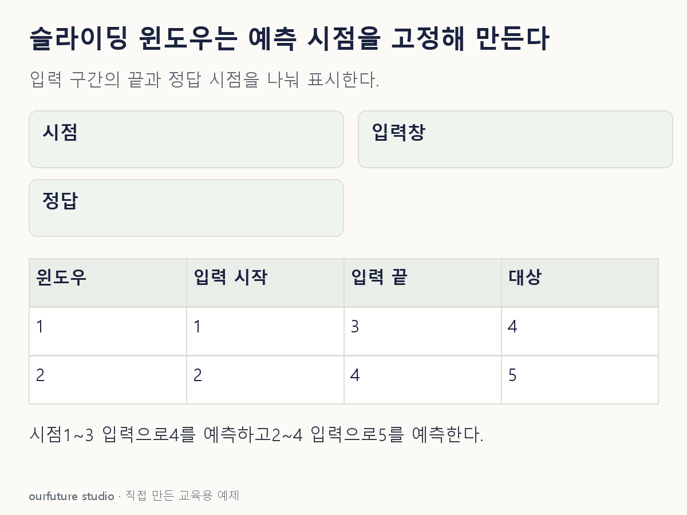

조건을 바꾸며 확인하기
창 이동 간격1, 결측 없음, 등간격 관측이다. 관측 수n·창 길이L·예측 수평h는 양의 정수다. 완전한 쌍의 수는 max(0,n−L−h+1)이므로 자료가 짧으면 음수개가 아니라0개다. 창 수 산술이 누수 없는 평가를 보장하지 않는다.
설명 그림과 비교하기
아래 그림과 표는 고정된 설명 예제입니다. 기본·변형 중 어떤 조건인지 캡션을 읽고, 바꾼 입력의 결과는 계산 칸에서 확인하세요.

같은 문제를 직접 골라 보기
시간순 관측 5개. 창 길이 3, 한 시점 앞을 예측하고 창을 1칸씩 이동한다.
조건을 더 바꾸면?
관측 5개와 창 길이 3은 같고 두 시점 앞 h=2를 예측하면 완전한 쌍은?
변형 풀이 확인
1개: (10,11,12)→14.
n−L−h+1=1이다. 정답은 입력 바로 다음 13이 아니라 두 시점 뒤 14다.
창 끝 t, 정답은 t+h.